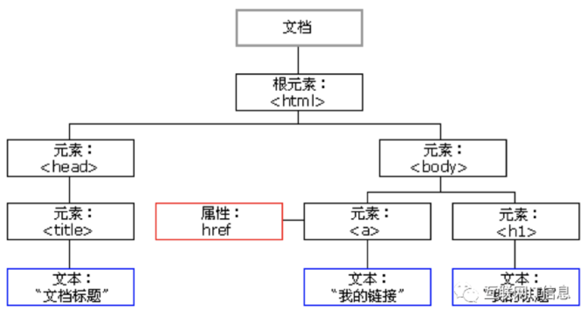
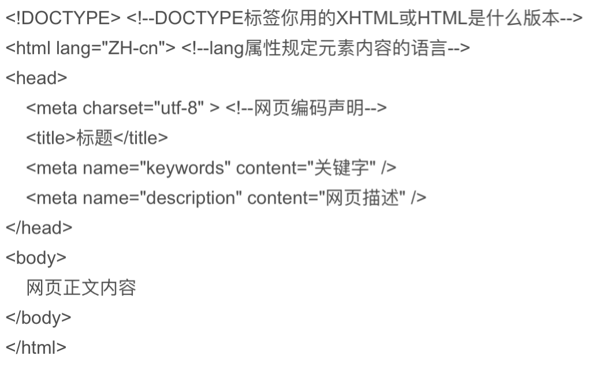
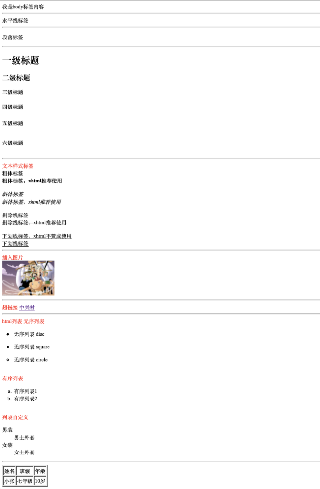

一、html概念
1、定义：（Hyper Text Markup Language）超文本标记语言，主要是通过html标记对网页中的文本，图片，声音等内容进行描述，同时也可以在文本中包含“超级链接”，通过超链接实现网页跳转。
2、编码格式：
3、html结构
 
4、html标签关系
1）嵌套关系：类似父亲和儿子之间的关系
<html>
<head></head>
<body></body>
</html>
2）并列关系：类似与兄弟之间的关系
<head></head>
<body></body>
5、html标签分类
1）双标记：也称体标记，是指由开始和结束两个标记符组成的标记。<标记名></标记名>
<p>：默认情况下，文本在一个段落中根据浏览器窗口的大小自动换行。
<h1>、<h2>、<h3>、<h4>、<h5>和<h6>：等级标题，从<h1>到<h6>重要性递减
<font>：控制网页中文本的字体、字号和颜色
超链接：<a href="跳转目标" target="目标窗口的弹出方式">文本或图像</a>
2）单标记：也称空标记，只指用一个标记符号即可完整的描述某个功能的标记。<标记名/>
<hr />：添加一条默认样式的水平线
<br />：换行标记
<!--注释语句-->
图像标记：<img src=“img/logo.gif” alt=“教育在线" />
二、html基础代码和显示
<!DOCTYPE html>
<html>
<!--我是注释-->
<!--html标签描述：
1、跟标记，用于告知浏览器其自身是一个html文档
2、<html>标记标志着html文档的开始，</html>标记标志着html文档的结束
3、<html> 与 </html> 之间的文本描述网页
-->
<head>
<!--head标签描述：
1、<head>标记头部开始，</head>标记头部结束
2、<head>标记必要且在一个html文档中只能含有一对
3、<head> 定义关于文档的信息；<title> 定义文档标题；<base> 定义页面上所有链接的默认地址或默认目标；
<meta>定义关于HTML文档的元数据。<script> 定义客户端脚本；<link>定义文档与外部资源之间的关系；
<style> 定义文档的样式信息。
-->
<meta charset="utf-8">
<!--编码格式 告诉给浏览器用什么方式来都这页代码-->
<title>网页名称</title>
<!--定义HTML页面的标题，必须位于<head>标记之内。一个HTML文档只能含有一对，<title>之间的内容将显示在浏览器窗口的标题栏中-->
</head>
<body>
<!--主体标记：定义html文档所要显示的内容。所有文本、图像、音频和视频等信息都必须在<body>标记内，只能含有一对-->
我是body标签内容<br />
<!--<br/>换行-->
<hr />
水平线标签<br />
<hr />
<p>段落标签</p>
<hr />
<h1>一级标题</h1>
<h2>二级标题</h2>
<h3>三级标题</h3>
<h4>四级标题</h4>
<h5>五级标题</h5>
<h6>六级标题</h6>
<hr />
<font color="red" size="4">文本样式标签</font><br />
<!--font控制网页中文本的字体、字号、颜色-->
<b>粗体标签</b><br />
<strong>粗体标签，xhtml推荐使用</strong><br />
<br />
<i>斜体标签</i><br />
<em>斜体标签，xhtml推荐使用</em><br />
<br />
<a>删除线标签</a><br />
<del>删除线标签，xhtml推荐使用</del><br />
<br />
<u>下划线标签，xhtml不赞成使用</u><br />
<ins>下划线标签</ins><br />
<hr />
<font color="red" size="4">插入图片</font><br />
<img src="/Users/80260780/Pictures/666.jpg" alt="海贼王" title="666" width="180" height="120">
<hr />
<font color="red" size="4">超链接</font>
<a href="http://detail.zol.com.cn/1293/1292109/param.shtml" target="blank">中关村</a>
<!--超链接属性:
1、<a href="跳转目标" target="目标窗口的弹出方式">文本或图像</a>
2、href：用于指定链接目标的url地址，当为<a>标记应用href属性时，它就具有了超链接的功能。
3、target：用于指定链接页面的打开方式，其取值有_self和_blank两种，其中_self为默认值，代表在当前窗口打开；_blank为在新窗口中打开方式。
4、<base /> 可以设置整体链接的打开状态>
-->
<hr />
<font color="red" size="4">html列表</font>
<font color="red" size="4">无序列表</font>
<ul type="disc">
<li>无序列表 disc</li>
</ul>
<ul type="square">
<li>无序列表 square</li>
</ul>
<ul type="circle">
<li>无序列表 circle</li>
</ul><br />
<font color="red" size="4">有序列表</font>
<ol type="a" start="1">
<!--type:有序列表项目富豪的类型（1 a A i），start:编号开始的数字-->
<li>有序列表1</li>
<li>有序列表2</li>
</ol><br />
<font color="red" size="4">列表自定义</font>
<dl>
<dt>男装</dt>
<dd>男士外套</dd>
<dt>女装</dt>
<dd>女士外套</dd>
</dl>
<hr />
<!--<table> 标签定义 HTML 表格。
1、简单的 HTML 表格由 table 元素以及一个或多个 tr、th 或 td 元素组成。
2、tr 元素定义表格行，th 元素定义表头，td 元素定义表格单元。
3、更复杂的 HTML 表格也可能包括 caption、col、colgroup、thead、tfoot 以及 tbody 元素。-->
<table border="1">
<tbody>
<tr>
<th>姓名</th>
<th>班级</th>
<th>年龄</th>
</tr>
<tr>
<td>小张</td>
<td>七年级</td>
<td>10岁</td>
</tr>
</tbody>
</table>
</body>
</html>
代码显示页面：

书签：
W3school：https://www.w3school.com.cn/h.asp